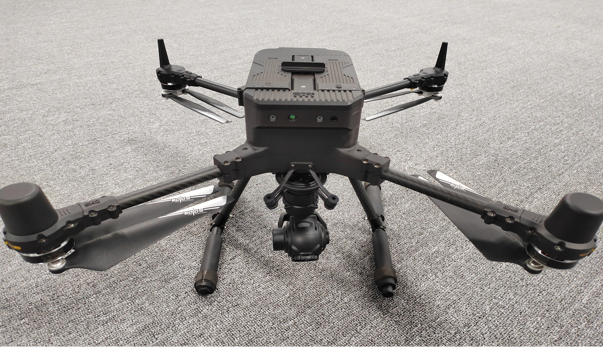
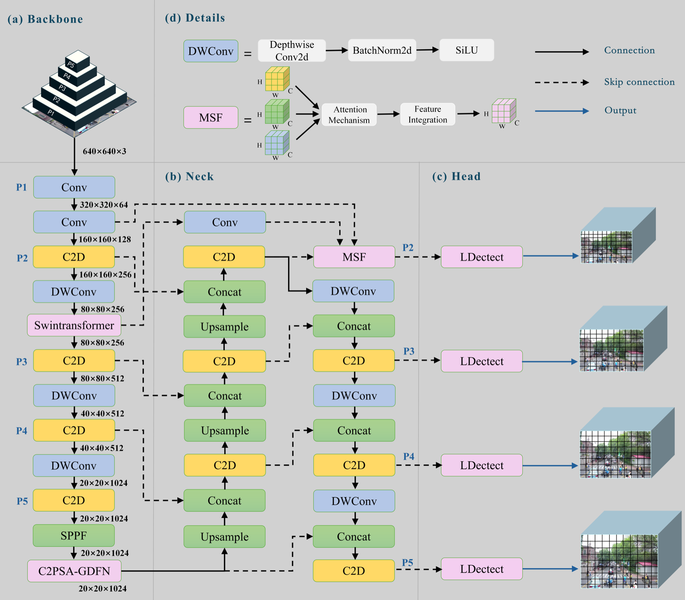
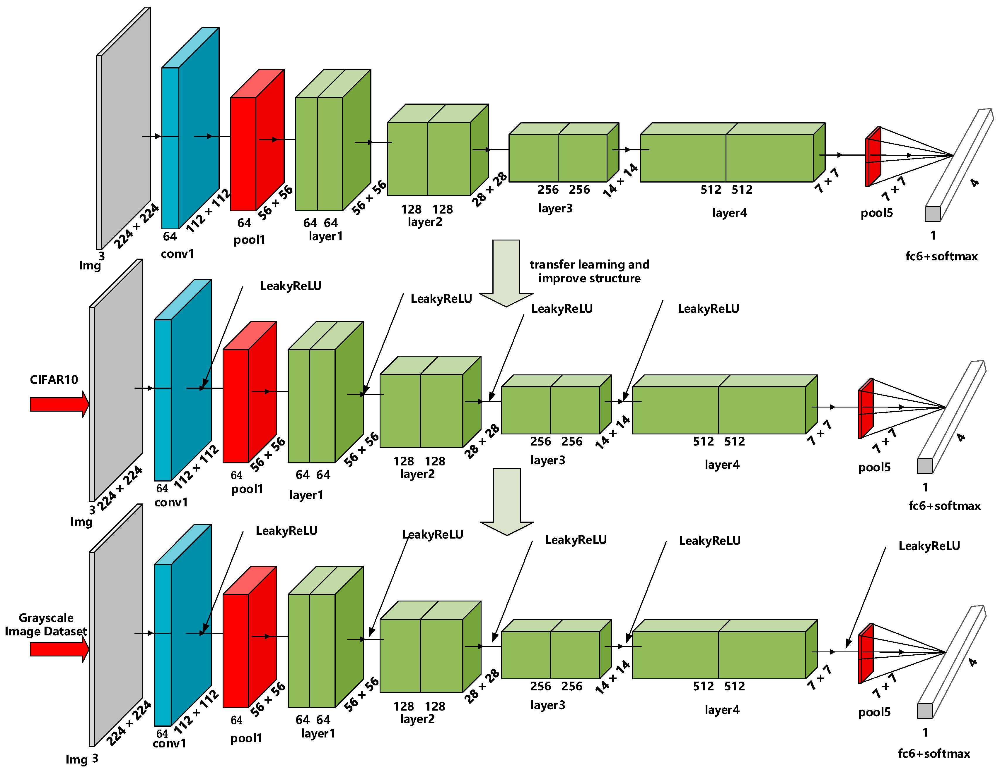
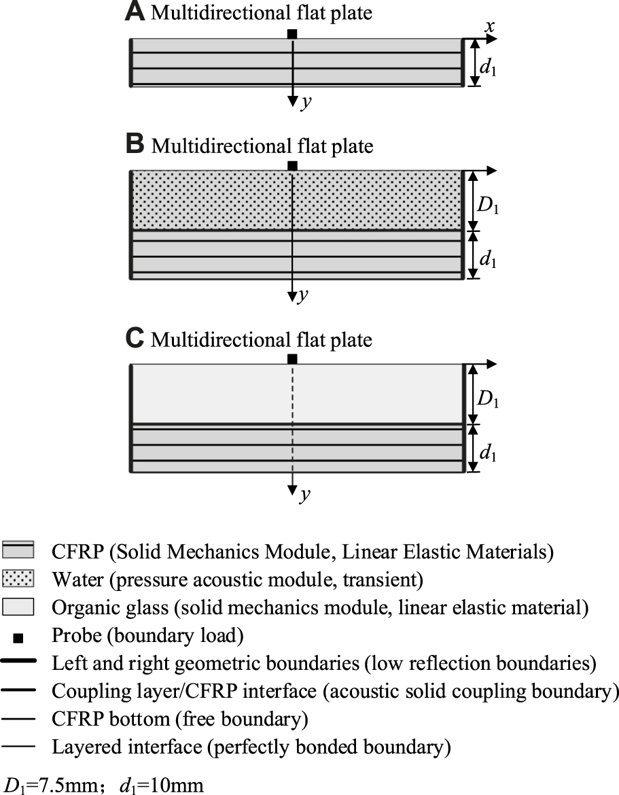
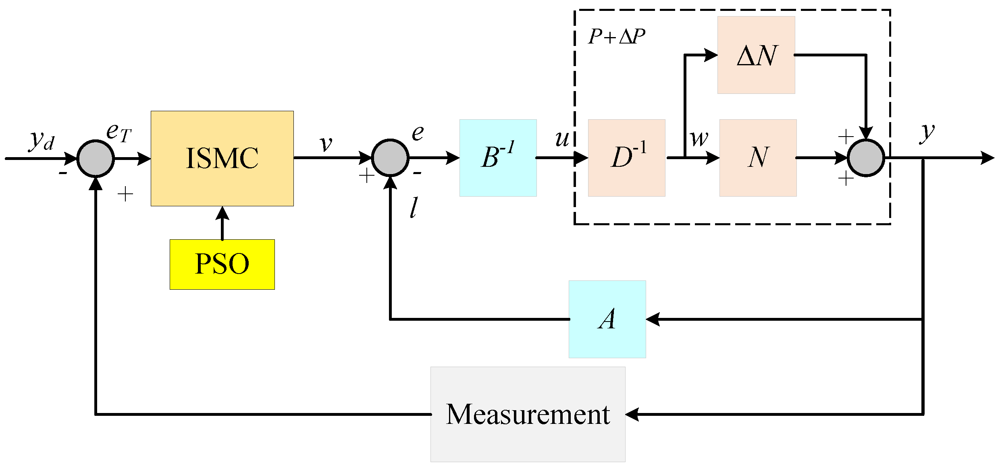
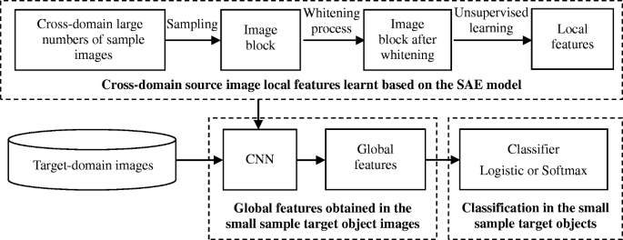

电子信息学院与计算机学院联合举办“智汇电信”学术论坛
论坛邀请黄铁军教授作“超高速脉冲相机与低空应用”专题报告。 学院报道 ↗

无人系统自主飞行与协同控制研究
教授 · 博士 · 团队负责人
郑州航空工业管理学院电子信息学院空天地无人系统协同控制团队成立于2017年，依托郑州航空工业管理学院开展研究。团队以中青年教授、博士为主体，围绕无人机、卫星地面站和网联无人车等研究对象，开展感知、导航、控制与数据平台相关工作。
团队的研究包括无人机自主航路规划和多机任务分配、复杂场景下的目标检测与跟踪、卫星地面站测控数传、无人车融合定位与规划调度，以及异构无人系统的数据互联。研究工作从算法和设备研制延伸到平台建设与实际应用。
图片来自团队演示材料
来自电子信息学院的科研与学术交流报道。
论坛邀请黄铁军教授作“超高速脉冲相机与低空应用”专题报告。 学院报道 ↗
学院师生围绕研究生学术交流与成果展示开展活动。 学院报道 ↗
项目聚焦车载高端智能光学成像关键技术研发及产业化。 学院报道 ↗
面向复杂环境中的自主飞行，研究无人机航路规划、动态路径重规划与多机多目标任务分配。针对远距离弱小目标难以发现和持续跟踪的问题，开展目标检测、识别、跟踪及相关嵌入式系统研究。
方向负责人：陈宇 教授
围绕卫星发射和在轨运行中的地面测控需求，研究车载卫星地面站测控数传设备及其软硬件系统。同时开展基于空天多模态图像的航天器相对导航与控制、卫星遥感数据处理及应用研究。
方向负责人：刘兆瑜 教授
面向无人车自主运行和调度，研究多传感器融合定位、环境感知、路径规划与任务调度。针对不同无人系统间的数据互联需求，开展数据空间和协同平台研究。
方向负责人：马正祥 教授
团队开展多旋翼、复合翼无人机自主飞行研究，探索动态航路规划和任务分配方法。在目标感知方面，针对复杂场景中的远距离弱小目标，研究检测与跟踪方法，开发相关系统装置。
团队开展测控数传一体化车载卫星地面站设备研制，研究数字基带多模式处理及相关软硬件技术，并探索卫星遥感在应急减灾等场景中的应用。
团队结合激光雷达建图、惯性测量和卫星定位等方法开展融合定位研究，研发无人车规划调度系统；同时，围绕异构数据互联，探索数据空间及网络协同平台。
团队成员承担国家重点研发计划、国家自然科学基金及省市科研项目，以下为部分代表性项目。
国家重点研发计划项目课题 · 陈宇
国家自然科学基金面上项目 · 马正祥
河南省重点研发专项 · 刘兆瑜
河南省重点研发专项 · 陈宇
2022年度郑州市揭榜挂帅项目
2024年度河南省卫星应用典型案例
点击题目可访问论文。部分论文附有原文中的研究图示；其余论文暂以文字列出。




